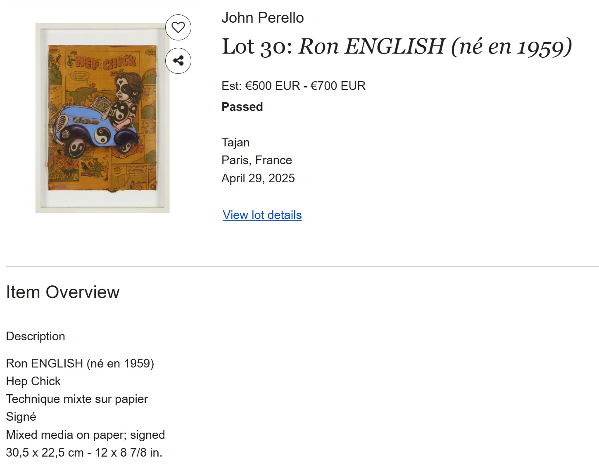
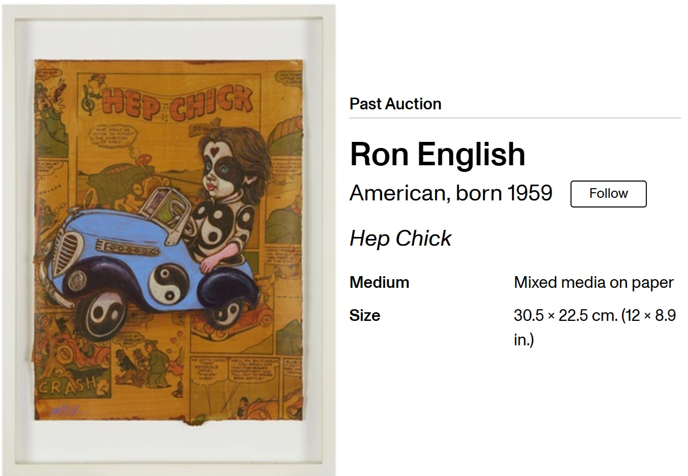

Literature
“Slicing Up Sculpture”, ARTnews, December 2007.

Hypebeast — English 101.

Notes
Also known as Hep Chick.
External auction and artwork records identify this work as signed, including Invaluable’s “signed” listing and Artsy’s signature field reading “Signed lower left: English, not signed.” No signature has been observed from the present documentation, so this catalogue retains “None observed” in the signature field.
Invaluable reports the dimensions as 12 × 8 7/8 inches, while Artsy and this catalogue record the dimensions as 12 × 8 3/4 inches.
Invaluable reports the dimensions as 12 × 8 7/8 inches, while Artsy and this catalogue record the dimensions as 12 × 8 3/4 inches.
Ancillary Documentation




